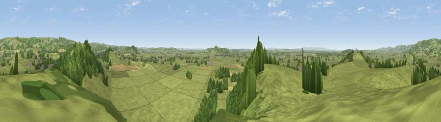

Viewpoint near Wookey
#11241 in England · top 24% of its area beats it · near WookeyThe view, rendered

A 360° render of this exact spot computed from the terrain model, tree cover and land cover — summer colours, afternoon light, calibrated against photographs of famous viewpoints. Real trees, hedges and buildings will differ in detail.
The panorama
Grey silhouette: terrain skyline in each direction (720 bearings, Earth curvature and refraction included). Dashed green: skyline with trees (+15 m) and buildings (+8 m) as obstacles. Blue strip: how far the ground is visible on each bearing.
Where the view opens
Wedge length = distance to the farthest visible ground on that bearing (vegetation-aware). Rings at 10, 25 and 50 km.
What fills the view
76% grassland · 19% woodland · 3% cropland · 2% built-up
Angular shares of the visible panorama (visual magnitude), not map area. Landscape diversity 0.31 (0–1 Shannon).
Key numbers
More beautiful places nearby
The staircase of upgrades: each row has a higher view potential than everything closer. Driving times are estimates from straight-line distance, calibrated against real road routing — check an actual route before setting out.
| Place | Direction | Drive | Score |
|---|---|---|---|
| Ben Knowle Hill | ENE · 1 km | ~3 min | 64.3 |
| Viewpoint near Easton | N · 4 km | ~10 min | 72.6 |
| Viewpoint near Westbury-sub-Mendip | N · 5 km | ~11 min | 73.4 |
| Glastonbury Tor | S · 6 km | ~13 min | 75.8 |
| Beacon Batch | N · 13 km | ~24 min | 79.4 |
| Bleadon Hill [Loxton Hill] | NW · 19 km | ~32 min | 79.6 |
| Cothelstone Hill | WSW · 34 km | ~52 min | 82.1 |
| Viewpoint near West Bagborough | WSW · 35 km | ~53 min | 84.3 |
51.19826, -2.70517 · source: screening · position refined by local search. Computed location — check access rights before visiting.